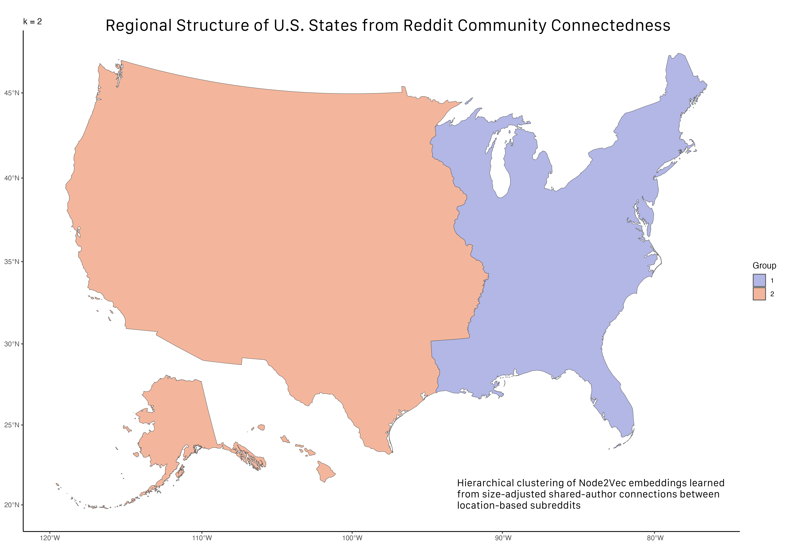

Distance vs. Connectedness: Location-based Reddit Forums Analyzed
Project Presentation
Research Question & Data
From Online Communities to Relationships Between Places
Location-based subreddits are online communities organized around physical places. But the same users often participate in multiple local communities, creating connections between places through shared online activity.
Reddit Users Participate across multiple local communities
Shared Participation Connect pairs of location-based subreddits
Place Connectedness Measure pairwise relationships
Geographic Structure? Distance, borders, and regions
Research Question
Can shared participation in location-based Reddit communities reveal how places in the U.S. are connected?
- Does connectedness decline with geographic distance?
- Does being in the same state matter beyond distance?
- Can connectedness alone recover recognizable geographic regions?
Research Inspiration
Bailey et al. (2018) used Facebook friendship networks to measure social connectedness between places, relating it to geographic distance and political boundaries (Bailey et al. 2018).
Their connectedness-based clustering further demonstrated how network relationships can reveal geographic regions.
From Reddit Activity to Place Connectedness
Data
64.7 million posts and comments
4.1 million unique contributors
619 U.S. location-based subreddits
June 2023 – July 2024
Subreddits represent different geographic scales, including states, cities, metropolitan areas, and other local communities.
Raw Reddit data were processed with PySpark on AWS and combined with geographic information for each community.
Reddit Activity Posts and comments from location-based communities
Author Sets Unique contributors to each subreddit
Subreddit Pairs Count shared contributors between communities
Connectedness Raw overlap + size-adjusted PCI
Unit of analysis: a pair of location-based subreddits.
This pairwise representation allows connectedness to be compared with geographic distance and administrative boundaries, or treated as a weighted network of places.
Geography Strongly Predicts Online Connectedness
Pairwise Regression
I modeled the number of shared authors between each pair of location-based subreddits as a function of their geographic relationship.
\[ \log(N_{ij} + 0.5) = \beta_1 \log(D_{ij}) + \beta_2 \text{SameState}_{ij} + \alpha_i + \alpha_j + \epsilon_{ij} \]
Fixed-Effects Results
| Model | Distance | Same State | Adj. \(R^2\) |
|---|---|---|---|
| All pairs | −0.458* | +1.087* | 0.791 |
| ≤ 200 miles | −0.871* | +1.187* | 0.888 |
| > 200 miles | −0.398* | +0.730* | 0.786 |
*** \(p < .001\). Subreddit fixed effects included in all models.
What Do We Learn?
Connectedness decreases with distance
Places farther apart tend to share fewer Reddit contributors.
The relationship is strongest locally
The distance coefficient is substantially larger within 200 miles than beyond 200 miles.
State borders also matter
Communities within the same state share more contributors even after accounting for distance and subreddit fixed effects.
Geographic distance and state boundaries are both strongly associated with patterns of shared online participation.
Modeling strategy adapted from the geographic connectedness framework of Bailey et al. (2018) (Bailey et al. 2018).
Can Connectedness Reconstruct Geographic Regions?
Instead of using geography to explain connectedness, I used the network of shared Reddit participation itself to identify groups of places with similar connections.
PCI Network Size-adjusted shared-author connections
Node2Vec Learn a network embedding for each state
Hierarchical Clustering Complete linkage on state embeddings
Geographic Regions Compare clusters with the U.S. map

What Emerges?
Broad geographic structure appears without using geographic distance in clustering.
At lower values of \(k\), the network produces broad regional divisions, including a recognizable East–West structure.
As the hierarchy is divided further, more localized regional patterns emerge.
51 communities: state-level subreddits for the 50 states + Washington, D.C.
Online connectedness contains geographic structure: states with similar patterns of Reddit co-participation tend to form geographically meaningful groups.
What Does Reddit Connectedness Tell Us?
Main Findings
1. Online connectedness has a strong geographic structure
Location-based communities that are geographically closer tend to share more contributors, with a substantially stronger distance relationship within 200 miles.
2. State boundaries remain visible online
Communities within the same state share more contributors even after accounting for geographic distance and subreddit-specific differences.
3. Geography also emerges from the network itself
Using only patterns of Reddit connectedness, network embeddings and hierarchical clustering recover recognizable regional structure among U.S. states.
Interpretation & Limitations
A Reddit contributor is not necessarily a resident of the place represented by a subreddit.
Shared participation measures co-participation, not friendship or direct social interaction.
Location-based subreddits differ substantially in population, activity, and geographic scale.
The regression results describe associations, not causal effects.
The state-level clustering uses comparable geographic units (50 states + Washington, D.C.), while the broader pairwise analysis includes location-based communities at multiple geographic scales.
Takeaway: Patterns of shared online participation provide a measurable signal of relationships between places—one that reflects physical distance and administrative boundaries while also revealing broader regional structure.